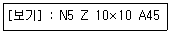
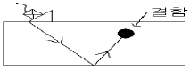
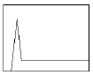
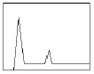
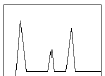
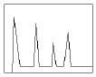

초음파비파괴검사산업기사 (2015-03-08 기출문제)
1과목: 비파괴검사 개론
1. 결함부와 이에 적합한 비파괴검사법의 연결이 틀린 것은?
- 강재의 표면결함 - 자분탐상시험법
- 경금속의 표면결함 - 침투탐상시험법
- 용접내부의 기공 - 와전류탐상시험법
- 단조품의 내부결함 - 초음파탐상시험법
(정답률: 93%)

2. 다음 중 비파괴검사에 대한 설명으로 옮은 것은?
- 육안검사(VT)는 비파괴검사의 한 종류이다.
- 누설자속시험은 압력용기의 물의 높이를 검지하는데 적합한 시험방법이다.
- 자분탐상시험은 섬유강화 복합재료의 접촉 불량부를 검출하는데 적합하다.
- 침투탐상시험은 오스테나이트계 스테인리스강의 비드 중에 내재하고 있는 미세한 균열을 검출하는데 적합한 시험방법이다.
(정답률: 95%)
3. 요크(Yoke)를 이용한 자분탐상시험시 유도자장의 강도가 가장 큰 부위는?
- 요크의 북극(N극)
- 요크의 남극(S극)
- 극과 극 사이
- 극의 외부 주변
(정답률: 90%)
4. 거짓지시(false call)이란 무엇인가?
- 허용 가능한 크기보다 큰 흠
- 허용 가능한 크기보다 작은 흠
- 결함이 없는 부위를 검사 하였을 때 결함이 있는 것으로 지시하는 것
- 결함이 있는 부위를 검사 하였을 때 결함이 없는 것으로 지시하는 것
(정답률: 96%)
5. 침투탐상검사에서 용제 세척방법으로 적절하지 않은 것은?
- 브러쉬 고형물의 오염을 제거한다.
- 에어졸 타입 세정제의 노즐을 시험면에 가까이하여 강하게 뿌려준다.
- 수초간 방치한 후 마른 걸레로 세정액을 닦아 낸다.
- 세정제를 시험면에 1회만 뿌려야 한다.
(정답률: 76%)
6. 18-8 스테인레스강에 대한 설명 중 옮은 것은?
- Ni18%, Cr8%를 함유한다.
- 페라이트 조직으로 강자성이다.
- 입계부식 방지를 위해 Ti를 첨가한다.
- 염산, 염소가스, 황산 등에 강하다.
(정답률: 72%)
7. 구리 및 구리 합금에 대한 설명으로 옮은 것은?
- 구리의 비중은 약 7.8이다
- 관 등의 황동제품은 잔류응력에 기인하여 탈아연 부식이 발생한다.
- 황동가공제는 사용 중 시간의 경과에 따라 경도 등 제성질이 악화되는 현상을 경년변화라 한다.
- Cu80%+Zn20% 합금을 길딩 메탈이라 하며, coining을 하기 쉬우므로 동전, 메달 등에 사용된다.
(정답률: 65%)
8. 스프링용강에 요구되는 특성은 높은 탄성, 높은 내피로성, 그리고 적당한 점성이다. 이에 가장 적합한 조직은?
- 마텐자이트(martensite)
- 투르스타이트(troostite)
- 소르바이트(sorbite)
- 베이나이트(bainite)
(정답률: 85%)
9. 금속을 물리적 성질과 기계적 성질로 구분할때 물리적 성질에 해당되지 않는 것은?
- 비중
- 융점
- 열팽창계수
- 크리프저항
(정답률: 58%)
10. 탄소강에서 탄소량 증가에 따라 증가하는 것은?
- 비중
- 강도
- 열전도도
- 열팽창계수
(정답률: 82%)
11. 레데뷰라이트(ledeburite) 조직을 나타낸 것은?
- 마텐자이트(martensite)
- 시멘타이트(cementite)
- α(ferrite) + Fe3C
- γ(austenite) + Fe3C
(정답률: 84%)
12. 복합재료 소재 중 섬유 강화금속은?
- GFRP
- CFRP
- FRM
- ACM
(정답률: 82%)
13. 해드필드강(hadfield steel)의 특징을 설명한 것 중 틀린 것은?
- 고 마그네슘 강이라 불린다.
- 내마멸성 및 내충격이 우수하다
- 상온에서 오스테나이트 조직을 갖는다.
- 단조나 압연보다는 주조하여 만들어진다.
(정답률: 59%)
14. 내부응력을 받는 구조물 또는 제품에 어떠한 외력을 가하지 않는 방치상태에서도 자연적으로 재료가 파괴되는 현상은?
- 헤어크랙
- 시즌크랙
- 상온취성
- 고온취성
(정답률: 67%)
15. 50~90Ni, 11~30%Cr, 0~0.25% Fe 범위의 조성으로 된 합금으로 전기저항열선으로 가장 많이 사용되는 내열합금은?
- 니크롬(nichrome)
- 알블락(albrac)
- 라우탈(lautal)
- 실루민(silumin)
(정답률: 86%)
16. 아크 용접기의 특성 중 부하 전류가 증가하면 단자 전압이 저하하는 것을 무엇이라 하는가?
- 정전류특성
- 수하특성
- 상승 특성
- 자기 제어 특성
(정답률: 83%)
17. 용접후 피닝을 하는 주 목적은 무엇인가?
- 도료를 없애기 위해서
- 용접 후 잔류 응력을 제거하기 위해서
- 응력을 강하게 하고 변형을 적게 하기 위해서
- 모재의 균열을 검사하기 위해서
(정답률: 89%)
18. 피복 아크 용접에서 아크전압이 20V, 아크전류는 150A, 용접속도를 200cm/min 라 할 때 용접 입열량은 몇 J/cm 인가?
- 900
- 1200
- 1500
- 2000
(정답률: 65%)
19. 가변압식(B형) 토치의 팁 1000번으로 가스용접시 가장 적당한 판두께(mm)는?
- 5
- 10
- 15
- 20
(정답률: 79%)
20. 용접봉의 종류 중 내균열성이 가장 좋은 것은?
- 저수소계
- 고산화티탄계
- 고셀룰로스계
- 일미나이트계
(정답률: 68%)
2과목: 초음파탐상검사 원리 및 규격
21. 다음 중 금속재료를 초음파탐상시험 할 때 가장 많이 사용하는 주파수의 범위는?
- 1kHz ~ 25kHz
- 1MHz ~ 5MMHz
- 1kHz ~ 1000kHz
- 15kHz ~ 100kHz
(정답률: 94%)
22. 다음 종파에 대한 설명 중 잘못된 것은?
- 파를 전달하는 입자의 진동방향과 파의 진행방향이 평행하다.
- 음파의 종류 중 가장 빠르지만 액체내에서 존재하지 않는다.
- 동일한 주파수에서 횡파보다 파장이 길다.
- 동일한 주파수에서 횡파보다 탐상감도가 낮다.
(정답률: 82%)
23. 수직탐상시험의 원리에 관한 설명 중 옳은 것은?
- 탐상면이 거친 시험체를 탐상하는 경우, 전달효율을 높이기 위해서는 고주차수 탐촉자를 사용한다.
- 접촉매질로 물이나 글리세린은 사용할 수 없다.
- 용접부 탐상에는 종파를 사용하는 수직탐상이 주로 이용된다.
- 수직탐상에서 면상 결함에 초음파가 수직으로 부딪쳐 결함의 최대 투영면적이 얻어질 때 최대 결함에코가 얻어진다.
(정답률: 71%)
24. 곡률을 갖는 용접부를 경사각탐상 할 때 고려해야 할 사항이 아닌 것은?
- 탐촉자와 시험재의 접촉조건
- 대비시험편의 표준결함 형상
- 저면에코의 위치판다
- 탐촉자 및 진동자의 크기
(정답률: 55%)
25. DGS선도(AVG선도) 제작시 사용한 대비 반사원의 종류는?
- 드릴구멍
- 구형 결함
- 원형평면 결함
- V홈 결함
(정답률: 62%)
26. 서로 상이한 매질 내에서 초음파의 전달 속도를 결정해 주는 인자는?
- 주파수 및 파장
- 두께 및 전달시간
- 탄성 및 밀도
- 화학성분구조 및 투자성
(정답률: 69%)
27. 동일한 크기의 결함인 경우 초음파탐상시험으로 가장 발견하기 쉬운 결함은?
- 시험체 내부에 있는 구형의 결함
- 초음파의 진행방향에 평행인 결함
- 초음파의 진행방향에 수직인 결함
- 이종 물질들이 혼입된 결함
(정답률: 93%)
28. 알루미늄에서의 초음파 전달속도가 245000인치/s 일 때 알루미늄 1인치를 통과하는데 걸리는 시간은?
- ⅛s
- 4μs
- 4s
- ¼ ×104S
(정답률: 85%)
29. 보통의 경우 경사각탐촉자에 아크릴수지에 쐐기를 사용하는 데 아크릴수지를 사용하는 이유가 아닌 것은?
- 감쇠가 적으므로
- 음향임피던스 값이 크므로
- 가공성이 좋으므로
- 음속이 적절하므로
(정답률: 75%)
30. 시험재의 결정 입자가 클 때 다음 중 가장 크게 영향을 받는 것은?
- 감쇠변화
- 파형변이
- 진동자 수명단축
- 음속변화
(정답률: 52%)
31. 보일러 및 압력용기에 대한 초음파탐상검사(ASME Sec. V, art4)에 따른 탐상장비 중 스크린 높이 직진성에 대한 설명으로 옳은 것은?
- 게인을 조정하여 큰 쪽 지시가 전체 스크린 높이의 80%가 되도록 설정한다.
- 큰 쪽의 에코높이를 전 스크린 높이의 80%로부터 20%로 5%씩 연속적으로 감도를 조정한다.
- 판독값은 큰 쪽 에코높이의 80%이어야하며 오차는 전 스크린 높이의 10% 이내이어야한다.
- 교정시험편에 경사각빔 탐촉자를 위치시켜 1/4T 및 1T구멍으로부터 두지시간 진폭비가 4:1이 되도록 한다.
(정답률: 76%)
32. 보일러 및 압력용기의 재료에 대한 초음파탐상검사(ASME Sec. V, art5)에서 요구하는 작업 설차서에 꼭 포함되어야 할 내용이 아닌 것은?
- 접촉매질
- 시험되는 재료의 종류
- 시험대상품의 표면
- 지시 크기를 측정하는 방법
(정답률: 53%)
33. 금속재료의 펄스반사법에 따른 초음파탐상 시험방법 통칙(KS B 0817)의 특별점검에 해당하지 않는 것은?
- 성능에 관계된 수리를 한 경우
- 특별히 점검할 필요가 있다고 판단된 경우
- 시험이 정상적으로 이루어지는가를 검사하는 경우
- 특수한 환경 아래서 사용하여 이상이 있다고 생각된다.
(정답률: 87%)
34. 건축용 강판 및 평강의 초음파 탐상시험에 따른 등급분류와 판정기준(KS D 0040)에서 대표 결함의 정의는?
- 탐상선으로 구분한 각 구분의 최대 흠 에코높이 결함
- 점적률이 가장 큰 결함
- 환산된 결함 구분수 중 최대 결함
- DH선을 초과하는 결함 중 길이가 최대인 결함
(정답률: 68%)
35. 강 용접부의 초음파탐상 시험방법(KS B 0896)의 경사각 탐촉자 성능 점검주기에서 입사점, 탐상 굴적각, 탐상각도 등은 작업시간 몇 시간 간격으로 점검하는가?
- 4시간
- 5시간
- 6시간
- 8시간
(정답률: 74%)
36. 보일러 및 압력용기의 재료에 대한 초음파탐상시험(ASME Sec. V, art5)에서 볼트재의 나사산에 대한 수직빔 축방향의 주사에 대한 설명 중 잘못된 것은?
- 가공하기 전 또는 후 축방향으로부터 시험해야한다.
- 표면처리된 볼트재의 양끝 면은 평평하고 볼트 축에 직각이여야한다.
- 20% DAC를 넘는 지시모양의 원인이 되는 불연속부는 인용 규격의 판정 기준을 기초하여 평가 가능한 정도까지 조사해야한다.
- 펄스에코 방식의 수평빔 장치를 사용하여 직접 접촉법 또는 수직법으로 재료의 양끝 면으로부터 행해야한다.
(정답률: 49%)
37. 초음파 탐촉자의 성능 측정 방법(KS B ⑤35)에 규정된 [보기]의 탐촉자 기호에 대한 올바른 해석은?

- 보통의 주파수 대역으로 공칭주파수가 5MHz, 지르콘티탄산납계 자기 진동자의 높이x폭이 10x10mm이고, 굴절각이 45° 인 경사각용 탐촉자
- 보통의 주파수 대역으로 공칭주파수가 5MHz, 황산리튬 자기 진동자의 높이x폭이 10x10mm이고, 굴절각이 45° 인 경사각용 탐촉자
- 넓은 주파수 대역으로 공칭주파수가 5MHz, 황산리튬 자기진동자의 높이x폭이 10x10mm이고, 굴절각이 45° 인 경사각용 탐촉자
- 넓은 주파수 대역으로 공칭주파수가 5MHz, 수정진동자의 높이x폭이 10x10mm이고, 굴절각이 45° 인 경사각용 탐촉자
(정답률: 87%)
38. 보일러 및 압력용기의 재료에 대한 초음파탐상시험(ASME Sec. V, art4)에 따라 지름이 몇 인치를 초과하는 경우 동일 곡률의 시험체 또는 평평한 기본 교정시험편을 사용하여야 하는가?
- 10인치
- 20인치
- 30인치
- 60인치
(정답률: 58%)
39. 금속재료의 펄스반사법에 따른 초음파탐상 시험방법 통칙(KS B 0817)의 내용으로 옳은 것은?
- 표준시험편의 종류는 5가지이다.
- 탐상도형 표시기호는 B,W,T 등이 있다.
- 판재의 결함은 3등급으로 나눈다.
- 일반적으로 채택되어 사용되는 경사각 탐촉자의 각은 35°,50°,60°,70° 등이 있다.
(정답률: 57%)
40. 건축용 강판 및 평강의 초음파탐상시험에 따른 등급분류와 판정기준(KS D 0040)에 대한 설명 중 옳은 것은?
- x등급의 점적률은 15%이하이다.
- x등급의 국부 점적률은 10% 이하이다.
- y등급의 국부 점적률은 10% 이하이다.
- 등급은 x, y, z의 3등급으로 나뉜다.
(정답률: 56%)
3과목: 초음파탐상검사 시험
41. 용접부의 초음파탐상에서 결함의 끝 부분을 측정하는 방법이 아닌 것은?
- 6dB drop법
- 12dB drop법
- 10dB drop법
- 20dB drop법
(정답률: 57%)
42. 용접부의 경사각탐상시 주로 검출되는 불연속의 종류가 아닌 것은?
- 기공
- 균열
- 언더컷
- 라미네이션
(정답률: 53%)
43. 다음 중 다른 진동모드로 변환이 가장 쉬운 파의 종류는?
- 종파
- 횡파
- 판파
- 표면파
(정답률: 65%)
44. 초음파탐상검사에서 적산효과가 관찰 가능한 경우는?
- 봉재를 수직탐상한 경우
- 결정립이 조대한 용접부를 경사각탐상하는 경우
- 작은 결함이 존재하는 박판을 수직탐상하는 경우
- 펄스반복주파수가 적으면 감쇠가 큰 재질을 탐상하는 경우
(정답률: 63%)
45. 단강품의 수직탐상에 대해 기술한 것으로 옳은 것은?
- 임상 에코가 높고 저면에코가 나타나지 않는 경우 탐상 감도를 더 높게한다.
- 임상 에코가 높고 저면에코가 나타나지 않은 경우 탐촉자의 위치를 약간 이동하여 탐상한다.
- 임상 에코가 높고 저면에코가 나타나지 않는 경우 시험 주파수를 더 높게 한다.
- 임상 에코가 높고 저면에코가 나타나지 않는 경우 시험 주파수를 더 낮게 한다.
(정답률: 66%)
46. 초음파탐상시험시 용접부 탐상에 관한 설명으로 틀린 것은?
- 주사는 일반적으로 0.5스킵에서 1스킵사이의 거리가 포함되도록 한다.
- 탐상표면이 거친 경우는 주사속도를 높여 표면과의 마찰이 되도록 적게 해야 한다.
- 경사각탐상 전에 초음파 진행에 방해되는 결함검출을 위해 수직탐상을 한다.
- 일반적으로 시험체의 두께가 얇을수록 높은 주차수를 이용하여 탐상하는 것이 좋다.
(정답률: 54%)
47. 용접덧살을 제거하지 않은 오스테나이트계 스테인리스강 용접부를 검사하가에 가장 좋은 탐촉자는?
- 횡파 수직탐촉자
- 횡파 경사각탐촉자
- 종파 수직탐촉자
- 종파 경사각탐촉자
(정답률: 56%)
48. 다음 중 수침법으로 시험체를 수직탐상하였을 때 표면 에코높이가 최대가 되는 시험체는? (단, 물의 음향임피던스는 가.5×106kg/mm2s이다.)
- 강 (음향임피던스는 45.4×106kg/mm2s)
- 아크릴수지 (음향임피던스는 다.2×106kg/mm2s)
- 동 (음향임피던스는 4가.8×106kg/mm2s)
- 알루미늄 (음향임피던스는 16.9×106kg/mm2s)
(정답률: 74%)
49. 탐촉자의 진동자 크기보다 작은 기공과 라미네이션이 같은 위치, 같은 크기로 존재한다면 일반적으로 스크린상에 에코높이는 어떠한가? (단, 음파는 결함에 수직방향으로 입사된다.)
- 기공 에코가 라미네이션 에코보다 높다.
- 라미네이션 에코가 기공 에코 보다 높다
- 기공 에코와 라미네이션 에코는 같다.
- 사용한 주파수에 따라 틀리다.
(정답률: 75%)
50. 검사자로서 초음파탐상검사를 하기 위한 준비자세 중 관계가 먼 것은?
- 합부판정에 대한 사항을 숙지하여야한다.
- 장비의 검교정상태를 확인하여야한다.
- 결함의 유무가 제품에 미칠 영향을 고려하여 판정한다.
- 개선각도나 용접방법 등에 대한 정보를 수집한다.
(정답률: 53%)
51. 시간축 직진성이 좋지 않은 초음파탐상기를 이용하여 결함을 탐상한 경우 나타날 수 있는 선행하는 문제점으로 올바른 것은?
- 결함의 위치를 정확히 평가할 수 없다.
- 결함을 과소 혹은 과대하게 평가할 수 있다.
- 거리 또는 방향이 다른 근접한 2개의 결함을 분리 검출 할수 없다.
- 송신에코의 폭이 넓어져 불감대가 커진다.
(정답률: 45%)
52. 단강품에 대해서 수직으로 초음파 탐상할 때 잡음신호가 크고 저면 에코가 보이지 않을 경우에 합당한 조치는?
- 탐상감도를 높게 한다.
- 측정범위를 가급적 좁게한다.
- 더 낮은 주파수의 탐촉자를 사용한다.
- 리젝션을 사용한다.
(정답률: 72%)
53. 초음파 탐상에서 불합격된 결함을 용접보수 하였다. 다음 설명 중 틀린 것은?
- 요구하는 용접부의 품질을 얻을 수 있게 되었다.
- 용접부에는 검출하지 못한 결함이 있을 수 있다.
- 재용접 하였으므로 모재의 특성이 향상된다.
- 같은 방법으로 탐상하여 결함의 제거를 확인한다.
(정답률: 81%)
54. 그림과 같이 경사각법으로 검사를 실시했을 때 CRT에 나타나는 탐상도형으로 옳은 것은?





(정답률: 70%)
55. 접촉법으로 초음파탐상을 수행할 때 해쉬(hash)또는 불규칙 신호들이 CRT화면에 나타나는 이유는?
- 조대한 결정구조 때문
- 미세한 결정구조 때문
- 저면이 경사가 졌기 때문
- 접촉매질이 먼지 또는 더러운 이물질로 오염되었기 때문
(정답률: 70%)
56. 시험체 두께가 t인 강재에 대하여 전몰 수직 수침초음파 탐상검사를 할 때 최소한의 물거리로 가장 적당한 것은?
- t 이상
- ½ t 이상
- ⅓ t 이상
- ¼ t 이상
(정답률: 64%)
57. 초음파탐상검사에 대한 다음 설명 중 옳은 것은?
- 경사각탐상시 전후주사는 용접선에 대해 전후 방향으로 탐촉자를 주사하는 것이다.
- 동일 크기의 결함인 경우 초음파탐상시 가장 높은 결함에코가 검출되는 것은 초음파의 진행 방향에 평행한 균열이다.
- 경사각탐상은 탐상면에 대해 경사지게 초음파를 입사 시키는 방법으로 결함의 위치추정은 가능하나 크기추정은 불가능하다.
- 수직탐상은 탐상면에 대해 수직되게 초음파를 입사시키는 방법으로 결함의 크기추정은 가능하나 위치와 두께의 측정은 불가능하다.
(정답률: 85%)
58. 압력용기의 내식성을 증가시키는 클래드(clad)부 바로 밑의 군열검사는 어떻게 하는 것이 효과적인가?
- 클래드(clad)부에서 수직탐상
- 클래드(clad)부에서 경사각탐상
- 모재부에서 수직탐상
- 모재부에서 경사각탐상
(정답률: 62%)
59. 다음 중 접촉매질에 대한 설명으로 옳은 것은?
- 접촉매질은 시험체와 동일한 재료로 한다.
- 접촉매질이 달라지면 에코의 크기가 달라질 수 있다.
- 표면이 거친 시험체에서는 물을 접촉매질로 사용하는 것이 좋다.
- 접촉매질은 시험체를 보호하기 위한 것으로 초음파 탐상에 미치는 영향은 거의 없다.
(정답률: 71%)
60. 초음파탐상장치의 스크린표시방법 중 시험체의 평면을 표시하는 방식은?
- A-Scope 표시
- B-Scope 표시
- C-Scope 표시
- D-Scope 표시
(정답률: 63%)